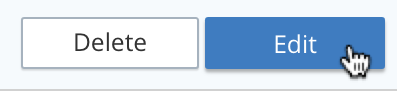
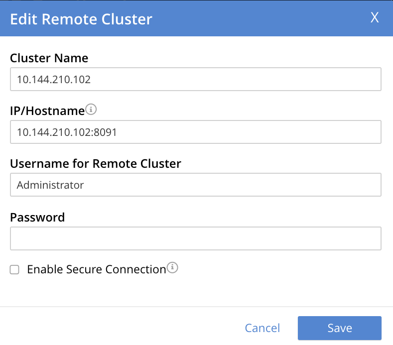
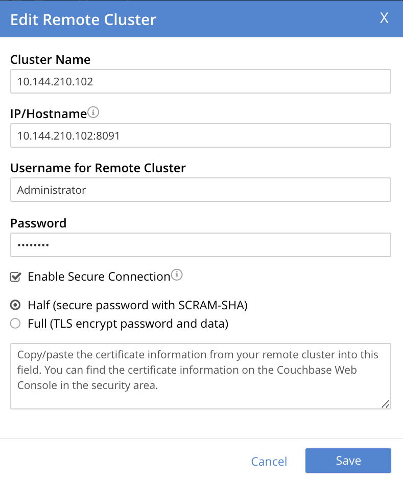
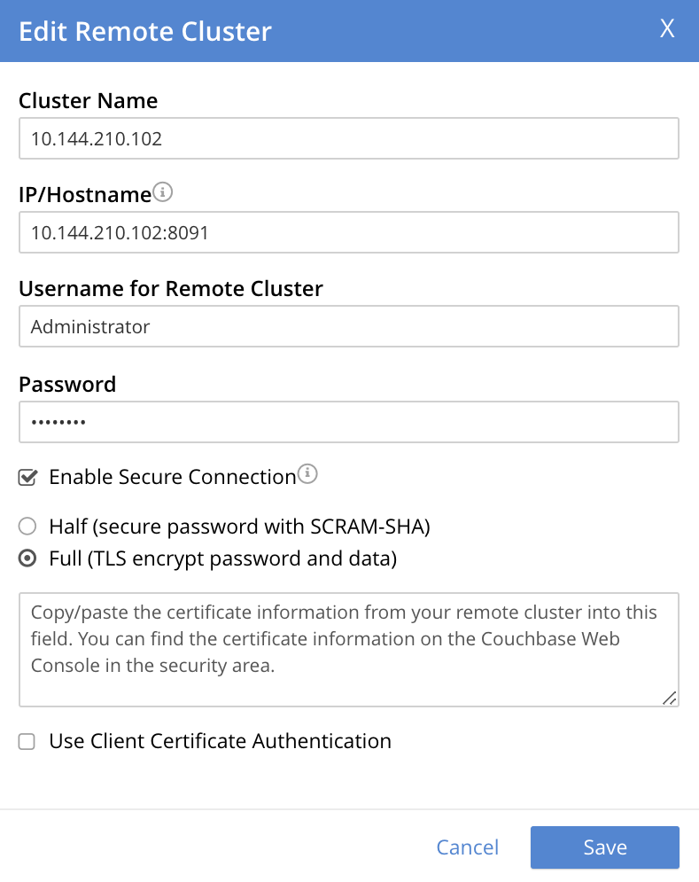
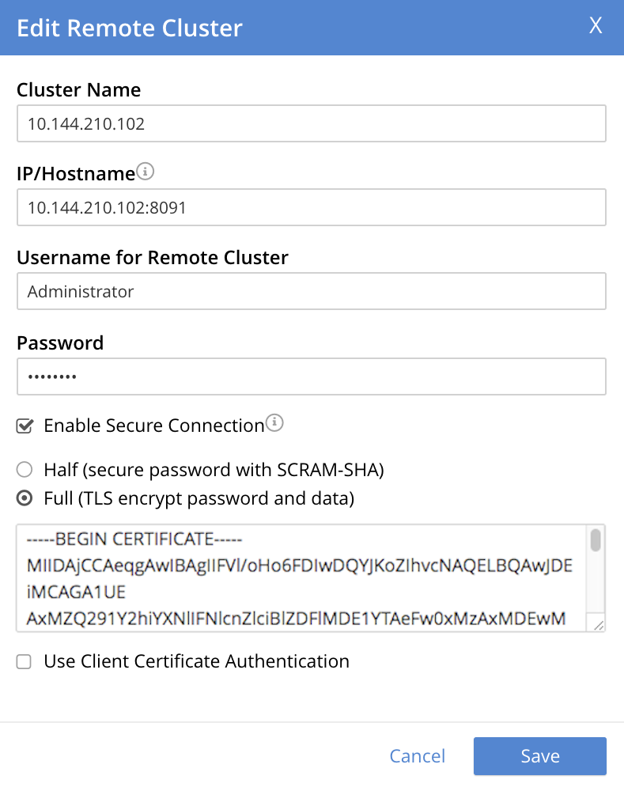
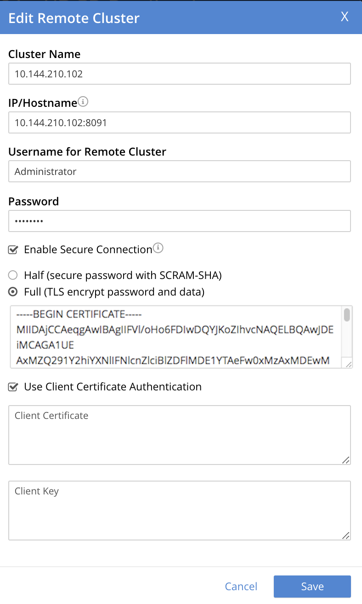
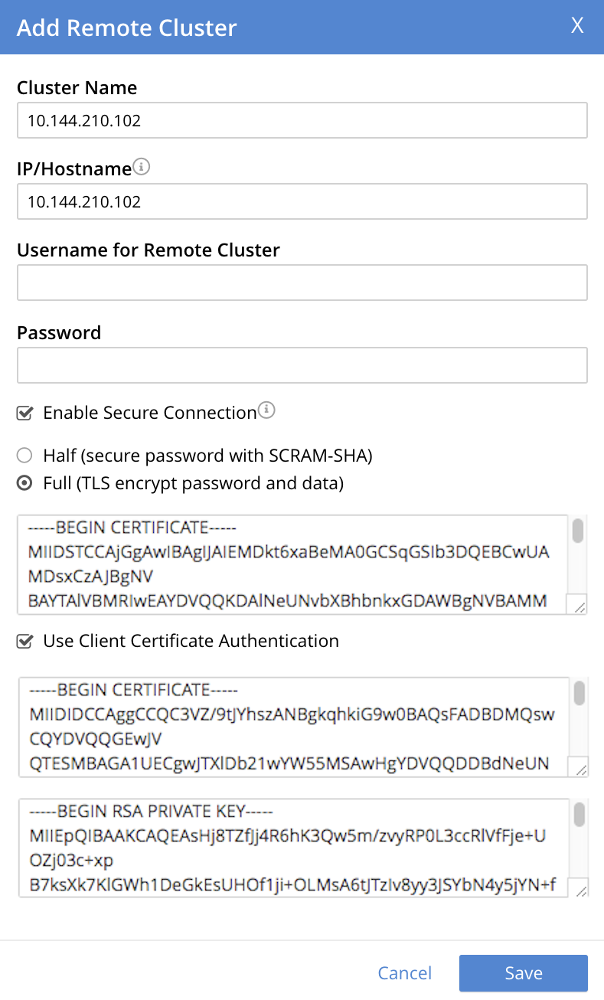

Enable Fully Secure Replications
Fully secure replications handle both authentication and data-transfer via TLS.
Understanding Fully Secure Replications
A fully secure replication handles both authentication and data-transfer via TLS. This can be accomplished in either of the following ways:
-
Specifying username, password, and root certificate.
-
Specifying root and client certificates, and client private key.
For an overview of certificates, see Certificates. For specific details on how to prepare and handle certificates for servers and clients, see Manage Certificates.
Note that if the client certificate has been generated using the root certificate, the client certificate itself must be specified. Alternatively, if the client certificate has been generated using intermediate certificates, the entire certificate chain — including the client certificate and all intermediate certificates — must be specified.
Examples on This Page
The examples in the subsections below show how to secure a replication fully; using the UI, the CLI, and the REST API respectively. As their starting-point, the examples assume the scenario that concluded the page Resume a Replication.
Enable Fully Secure Replications with the UI
-
Access Couchbase Web Console. Left-click on the XDCR tab, in the right-hand navigation menu.

This brings up the XDCR Replications screen. The upper part of the main panel, entitled Remote Clusters, lists the currently defined reference.
-
Left-click on the Edit button, located at the right-hand side of the row:
This brings up the partially filled Edit Remote Cluster dialog:
 -
In the dialog, enter the Password for the remote cluster, and check the Enable Secure Connection checkbox. The dialog now expands vertically:
The Half radio button is checked by default: this means that half-secure replication is selected. Instead, select the Full (TLS encrypt password and data) button. The dialog again expands vertically, and now appears as follows:
Proceed in either of the ways explained immediately below.
Specify Username, Password, and Root Certificate
This procedure requires access to the root certificate for the destination cluster. This can be obtained by accessing the destination cluster by means of Couchbase Web Console; and accessing the Root Certificate panel, from the Security screen. See Root Certificate.
A procedure for substituting a different root certificate for the provided default is provided in Configure Server Certificates.
-
In the open Add or Edit dialog, enter the Username for Remote Cluster, and Password.
-
Copy and paste the root certificate for the remote cluster into the top interactive pane, below the radio buttons — leaving both of the lower interactive panes blank.
The dialog now appears approximately as follows:
 -
Left-click on the Save button, at the lower-right of the dialog.
All replications to the edited reference now proceed securely.
Specify Root and Client Certificates, and Client Private Key
This procedure requires access to the root certificate for the destination cluster. This can be obtained by accessing the destination cluster by means of Couchbase Web Console; and accessing the Root Certificate panel, from the Security screen. See Root Certificate.
A procedure for substituting a different root certificate for the provided default is provided in Configure Server Certificates. This also demonstrates how the contents of certificates and keys can be displayed on the command line, and so made available for copying and pasting.
Information on creating a corresponding client certificate and client private key is provided in Configure Client Certificates.
Proceed as follows. (Note that specific file-examples to be used are listed in Using Client and Server Certificates for Secure XDCR.)
-
Copy and paste the root certificate for the destination cluster into the top interactive pane.
-
Check the Use Client Certificate Authentication checkbox. The dialog expands vertically, as follows:
Interactive fields have thus become visible, for the specifying of Client Certificate and Client Key.
-
Copy and paste the client certificate prepared for the source cluster into the middle interactive pane.
-
Copy and paste the client private key prepared for the source cluster into the bottom interactive pane.
-
Ensure that the Username for Remote Cluster and Password fields are blank. The dialog now appears approximately as follows:
 -
Left-click on the Save button, at the lower-right of the dialog.
If errors have occurred in certificate-preparation, these are displayed at the top of the dialog. Otherwise, all replications for the edited reference are now fully secured.
See Configure Server Certificates and Configure Client Certificates for information on certificate-preparation.
Enable Fully Secure Replications with Add Remote Cluster
Left-clicking on the Add Remote Cluster button, located at the upper-right of the XDCR Replications screen, brings up the Add Remote Cluster dialog. As shown in Create an XDCR Reference with the UI, this is used to create a new reference. The field-content of this dialog is identical to that of the Edit Remote Cluster dialog, just examined: therefore it too can be used to establish security for the reference and its corresponding replications.
Enable Fully Secure Replications with the CLI
To create and edit a reference, and attribute to it a security-level, use the xdcr-setup command.
Use of this command to create a non-secure reference is already demonstrated in Create an XDCR Reference with the CLI.
From the starting-point given above, in Examples on this Page, proceed as follows.
Secure an Existing Reference with CLI, Using Credentials
To edit the existing non-secure reference to 10.142.180.102, specifying fully secure replication by means of the remote cluster’s appropriate administrative credentials and its root certificate, enter the following:
couchbase-cli xdcr-setup -c 10.142.180.101 \ -u Administrator -p password \ --edit \ --xdcr-cluster-name 10.142.180.102 \ --xdcr-hostname 10.142.180.102 \ --xdcr-username Administrator \ --xdcr-password password \ --xdcr-secure-connection full \ --xdcr-certificate /Users/username/cert/ca.pem
Note that the --edit flag is specified.
The --xdcr-username and --xdcr-password are those for the remote cluster.
The value of --xdcr-certificate is set to full.
The value of --xdcr-certificate is the root certificate of the remote cluster, specified as a local pathname.
If successful, the command returns the following:
SUCCESS: Cluster reference edited
The reference and its associated replications are now fully secured.
Secure an Existing Reference with CLI, Using Certificates
To edit the existing non-secure reference to 10.142.180.102, specifying fully secure replication by means of the remote cluster’s root certificate, a client certificate, and a client private key, enter the following:
couchbase-cli xdcr-setup -c 10.142.180.101 \ -u Administrator \ -p password \ --edit \ --xdcr-cluster-name 10.142.180.102 \ --xdcr-hostname 10.142.180.102 \ --xdcr-username Administrator \ --xdcr-password password \ --xdcr-secure-connection full \ --xdcr-certificate /Users/username/cert/ca.pem \ --xdcr-user-certificate /Users/username/clientcert/travel-sample.pem \ --xdcr-user-key /Users/username/clientcert/travel-sample.key
Note that the --edit flag is specified.
The --xdcr-username and --xdcr-password are those for the remote cluster.
The value of --xdcr-certificate is set to full.
Specified as local pathnames are the values of --xdcr-certificate (the root certificate of the remote cluster), --xdcr-user-certificate (the client certificate), and --xdcr-user-key (the client’s private key).
If successful, the command returns the following:
SUCCESS: Cluster reference edited
The reference and its associated replications are now fully secured.
Create a New, Fully Secure Reference with CLI, Using Credentials
To create a new, fully secure reference from 10.142.180.101 to 10.142.180.103 by means of the remote cluster’s appropriate administrative credentials and its root certificate, enter the following:
couchbase-cli xdcr-setup -c 10.142.180.101 \ -u Administrator -p password \ --create \ --xdcr-cluster-name 10.142.180.103 \ --xdcr-hostname 10.142.180.103 \ --xdcr-username Administrator \ --xdcr-password password \ --xdcr-secure-connection full \ --xdcr-certificate /Users/username/cert/ca.pem
Note that the --create flag is specified.
The --xdcr-username and --xdcr-password are those for the remote cluster.
The value of --xdcr-secure-connection is set to full.
The value of --xdcr-certificate is the root certificate of the remote cluster, specified as a local pathname.
If successful, the command returns the following:
SUCCESS: Cluster reference created
The new reference is now fully secured, as will be its associated replications.
Create a New, Fully Secure Reference with CLI, Using Certificates
To create a new, fully secure reference from 10.142.180.101 to 10.142.180.103 by means of the remote cluster’s root certificate, a client certificate, and a client private key, enter the following:
couchbase-cli xdcr-setup -c 10.142.180.101 \ -u Administrator -p password \ --create \ --xdcr-cluster-name 10.142.180.103 \ --xdcr-hostname 10.142.180.103 \ --xdcr-username Administrator \ --xdcr-password password \ --xdcr-secure-connection full \ --xdcr-certificate /Users/username/cert/ca.pem \ --xdcr-user-certificate /Users/username/clientcert/travel-sample.pem \ --xdcr-user-key /Users/username/clientcert/travel-sample.key
Note that the --create flag is specified.
The --xdcr-username and --xdcr-password are those for the remote cluster.
The value of --xdcr-secure-connection is set to full.
Specified as local pathnames are the values of --xdcr-certificate (the root certificate of the remote cluster), --xdcr-user-certificate (the client certificate), and --xdcr-user-key (the client’s private key).
If successful, the command returns the following:
SUCCESS: Cluster reference created
The reference is now fully secured, as will be its associated replications.
For more information, see the complete reference for xdcr-setup.
Enable Fully Secure Replications with the REST API
To create or edit a reference, and attribute full security to it, use the /pools/default/remoteClusters URI.
Reference-creation with this URI is already demonstrated in Create an XDCR Reference with the REST API: note that this example used the demandEncryption flag with a value of zero, to specify non-secure replications.
From the starting-point given above in Examples on this Page, proceed as described in the subsections below.
Secure an Existing Reference with REST, Using Credentials
To edit the existing reference from 10.142.180.101 to 10.142.180.102, fully securing it by means of the remote cluster’s appropriate administrative credentials and its root certificate, enter the following:
curl -X POST -u Administrator:password \ http://10.142.180.101:8091/pools/default/remoteClusters/10.142.180.102 \ -d name=10.142.180.102 \ -d hostname=10.142.180.102:8091 \ -d "username=Administrator" \ -d "password=password" \ -d "demandEncryption=true" \ -d secureType=full \ --data-urlencode "certificate=$(cat /Users/username/cert/ca.pem)"
The URI terminates with the name of the remote cluster, signifying that this operation edits, rather than creates.
The username and password specified are those of the remote cluster.
Note that the demandEncryption flag is set to true, and the encryptionType flag specifies full.
The required --dataurlencode flag specifies the local path to the root certificate for the remote cluster.
Formatted, the output from a successful execution is as follows:
{
"certificate": "-----BEGIN CERTIFICATE-----\nMIIDAjCCAeqgAwIB...
...e5yV\nkOYCnuwY\n-----END CERTIFICATE-----",
"deleted": false,
"demandEncryption": true,
"encryptionType": "full",
"hostname": "10.142.180.102:8091",
"name": "10.142.180.102",
"secureType": "full",
"uri": "/pools/default/remoteClusters/10.142.180.102",
"username": "Administrator",
"uuid": "fe8df4ff66e7e8121c249de13fb3324a",
"validateURI": "/pools/default/remoteClusters/10.142.180.102?just_validate=1"
}
The secureType field specifies full: therefore, the reference and its associated replications have now been fully secured.
Secure an Existing Reference with REST, Using Certificates
To edit the existing non-secure reference from 10.142.180.101 to 10.142.180.102, specifying fully secure replication by means of the remote cluster’s root certificate, a client certificate, and a client private key, enter the following:
http://10.142.180.101:8091/pools/default/remoteClusters/10.142.180.102 \ -d name=10.142.180.102 \ -d hostname=10.142.180.102:8091 \ -d "username=Administrator" \ -d "password=password" \ -d "demandEncryption=true" \ -d secureType=full \ --data-urlencode "certificate=$(cat /Users/username/cert/ca.pem)" \ --data-urlencode "clientCertificate=$(cat /Users/username/clientcert/travel-sample.pem)" \ --data-urlencode "clientKey=$(cat /Users/username/clientcert/travel-sample.key)"
The URI terminates with the name of the remote cluster, signifying that this operation edits, rather than creates.
The username and password specified are those of the remote cluster.
Note that the demandEncryption flag is set to true, and the encryptionType flag specifies full.
The value of --xdcr-certificate is set to full.
Specified as local pathnames are the values of --xdcr-certificate (the root certificate of the remote cluster), --xdcr-user-certificate (the client certificate), and --xdcr-user-key (the client’s private key).
If successful, the command returns the following:
{
"certificate": "-----BEGIN CERTIFICATE-----\nMIIDAjCCAeqgAwIB...
...e5yV\nkOYCnuwY\n-----END CERTIFICATE-----",
"deleted": false,
"demandEncryption": true,
"encryptionType": "full",
"hostname": "10.142.180.102:8091",
"name": "10.142.180.102",
"secureType": "full",
"uri": "/pools/default/remoteClusters/10.142.180.102",
"username": "Administrator",
"uuid": "fe8df4ff66e7e8121c249de13fb3324a",
"validateURI": "/pools/default/remoteClusters/10.142.180.102?just_validate=1"
}
The secureType field specifies full: therefore, the reference and its associated
replications have now been fully secured.
Create a New, Fully Secure Reference with REST, Using Credentials
To create a new, fully secure reference from 10.142.180.101 to 10.142.180.103 by means of the remote cluster’s appropriate administrative credentials and its root certificate, enter the following:
curl -X POST -u Administrator:password \ http://10.142.180.101:8091/pools/default/remoteClusters \ -d name=10.142.180.103 \ -d hostname=10.142.180.103:8091 \ -d "username=Administrator" \ -d "password=password" \ -d "demandEncryption=true" \ -d secureType=full \ --data-urlencode "certificate=$(cat /Users/username/cert/ca.pem)"
The username and password specified are those of the remote cluster.
Note that the demandEncryption flag is set to true, and the encryptionType flag specifies full.
The required --dataurlencode flag specifies the local path to the root certificate for the remote cluster.
Formatted, the output from a successful execution is as follows:
{
"certificate": "-----BEGIN CERTIFICATE-----\nMIIDAjCCAeqgAwIBAgIIFVl...
...nkOYCnuwY\n-----END CERTIFICATE-----",
"deleted": false,
"demandEncryption": true,
"encryptionType": "full",
"hostname": "10.142.180.103:8091",
"name": "10.142.180.103",
"secureType": "full",
"uri": "/pools/default/remoteClusters/10.142.180.103",
"username": "Administrator",
"uuid": "fe8df4ff66e7e8121c249de13fb3324a",
"validateURI": "/pools/default/remoteClusters/10.142.180.102?just_validate=1"
}
The secureType field specifies full: therefore, the new reference is fully secured, as will be its associated replications.
Create a New, Fully Secure Reference with REST, Using Certificates
To create a new, fully secure reference from 10.142.180.101 to 10.142.180.103, specifying fully secure replication by means of the remote cluster’s root certificate, a client certificate, and a client private key, enter the following:
curl -X POST -u Administrator:password \ http://10.142.180.101:8091/pools/default/remoteClusters \ -d name=10.142.180.103 \ -d hostname=10.142.180.103:8091 \ -d "username=Administrator" \ -d "password=password" \ -d "demandEncryption=true" \ -d secureType=full \ --data-urlencode "certificate=$(cat /Users/username/cert/ca.pem)" \ --data-urlencode "clientCertificate=$(cat /Users/username/clientcert/travel-sample.pem)" \ --data-urlencode "clientKey=$(cat /Users/username/clientcert/travel-sample.key)"
The username and password specified are those of the remote cluster.
Note that the demandEncryption flag is set to true, and the encryptionType flag specifies full.
The value of --xdcr-certificate is set to full.
Specified as local pathnames are the values of --xdcr-certificate (the root certificate of the remote cluster), --xdcr-user-certificate (the client certificate), and --xdcr-user-key (the client’s private key).
If successful, the command returns the following:
{
"certificate": "-----BEGIN CERTIFICATE-----\nMIIDAjCCAeqgAwIBAgIIFVl...
...nkOYCnuwY\n-----END CERTIFICATE-----",
"deleted": false,
"demandEncryption": true,
"encryptionType": "full",
"hostname": "10.142.180.103:8091",
"name": "10.142.180.103",
"secureType": "full",
"uri": "/pools/default/remoteClusters/10.142.180.103",
"username": "Administrator",
"uuid": "fe8df4ff66e7e8121c249de13fb3324a",
"validateURI": "/pools/default/remoteClusters/10.142.180.102?just_validate=1"
}
The secureType field specifies full: therefore, the reference and its associated replications have now been fully secured.
For more information on using the REST API to create half-secure connections, see the reference page at Creating and Editing References.
Next Steps
XDCR supports replication between scopes and collections. See Replicate Using Scopes and Collections.